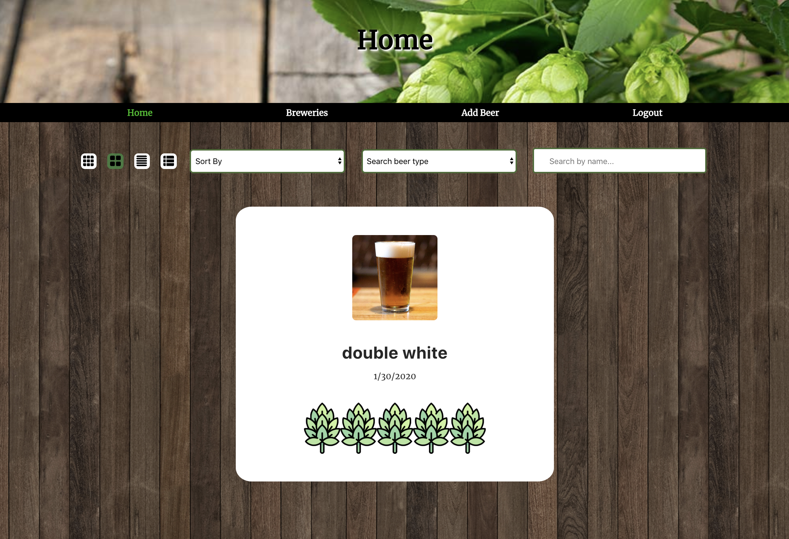
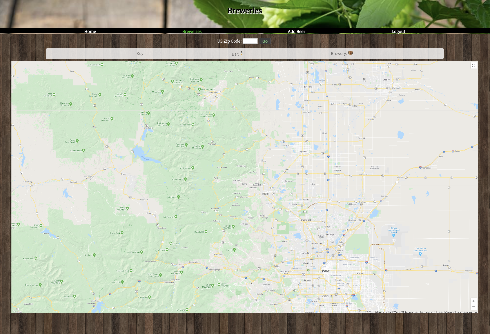
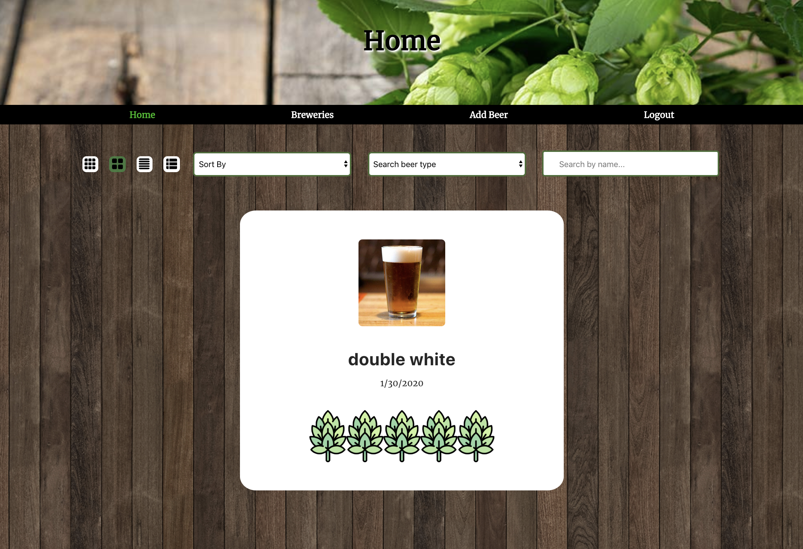
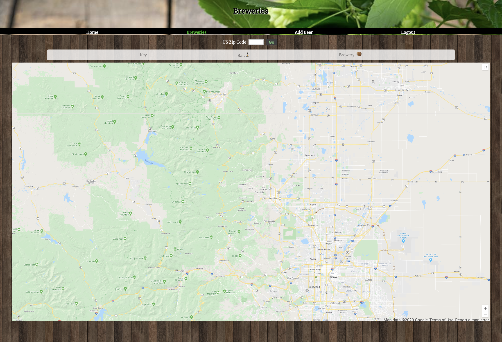

ABOUT ME
Hi there! I am a full stack developer based in the DC metro area. My previous experience was in the biomedical research field, until I decided to take my chances to make it as a developer.
Five months later and hundreds of hours of coding at a software engineering intensive, I can call myself a developer. My creativity and curiosity have carried me to where I am, and I intend to use them as my tools to keep building and developing awesome applications and websites!
Coding is just part of who I am, but there are many other pieces that make me whole. I am a dog mom, an avid cook and a novice in photography. I aim high but dissect those big goals into smaller pieces, so I don’t miss anything. I have a sweet tooth and eat ice cream even if its below freezing outside.
If you have any projects or ideas, I would love to hear about them and potentially become a collaborator.
WORK
 



DeerBear is a functional user friendly application for avid beer drinkers and aren't afraid to try new beers!Once the user has started to build their list of beers, the app will provide the user with a detailed dashboard of the generated list of beers. The user can find beer in beer list by sorting, filtering, and searching for keywords. The dashboard also contains a feature that user can use to customize and create different list view i.e list, tile, or expanded view. It also provides the user with a visual map of exactly where they have tasted all the hoppy goodness. User can search for local bars or breweries within a specified radius from their zip code.
This app is for users to keep organized with their grocery list of items. The user can add items to the shopping list as well as separate them into different categories. Categories can be chosen through a drop down menu of existing categories. The user can customize their lists according to their needs without any constrictions as to what kind of categories they want to make. Items can be deleted and created. The clean styling of the app allows for an easy to use platform and is easy to follow and read.
This app is for users to keep organized with their grocery list of items. The user can add items to the shopping list as well as separate them into different categories. Categories can be chosen through a drop down menu of existing categories. The user can customize their lists according to their needs without any constrictions as to what kind of categories they want to make. Items can be deleted and created. The clean styling of the app allows for an easy to use platform and is easy to follow and read.